Unit 1
Some Basic Concepts of Chemistry
Some Basic Concepts of Chemistry

After studying this unit, you will be able to
Roald Hoffmann
Chemistry deals with the composition, structure and properties of matter. These aspects can be best described and understood in terms of basic constituents of matter: atoms and molecules. That is why chemistry is called the science of atoms and molecules. Can we see, weigh and perceive these entities? Is it possible to count the number of atoms and molecules in a given mass of matter and have a quantitative relationship between the mass and number of these particles (atoms and molecules)? We will like to answer some of these questions in this Unit. We would further describe how physical properties of matter can be quantitatively described using numerical values with suitable units.
1.1 IMPORTANCE OF CHEMISTRY
Science can be viewed as a continuing human effort to systematize knowledge for describing and understanding nature. For the sake of convenience science is sub-divided into various disciplines: chemistry, physics, biology, geology etc. Chemistry is the branch of science that studies the composition, properties and interaction of matter. Chemists are interested in knowing how chemical transformations occur. Chemistry plays a central role in science and is often intertwined with other branches of science like physics, biology, geology etc. Chemistry also plays an important role in daily life.
Chemical principles are important in diverse areas, such as: weather patterns, functioning of brain and operation of a computer. Chemical industries manufacturing fertilizers, alkalis, acids, salts, dyes, polymers, drugs, soaps, detergents, metals, alloys and other inorganic and organic chemicals, including new materials, contribute in a big way to the national economy.
Chemistry plays an important role in meeting human needs for food, health care products and other materials aimed at improving the quality of life. This is exemplified by the large scale production of a variety of fertilizers, improved varieties of pesticides and insecticides. Similarly many life saving drugs such as cisplatin and taxol, are effective in cancer therapy and AZT (Azidothymidine) used for helping AIDS victims, have been isolated from plant and animal sources or prepared by synthetic methods.
With a better understanding of chemical principles it has now become possible to design and synthesize new materials having specific magnetic, electric and optical properties. This has lead to the production of superconducting ceramics, conducting polymers, optical fibres and large scale miniaturization of solid state devices. In recent years chemistry has tackled with a fair degree of success some of the pressing aspects of environmental degradation. Safer alternatives to environmentally hazardous refrigerants like CFCs (chlorofluorocarbons), responsible for ozone depletion in the stratosphere, have been successfully synthesised. However, many big environmental problems continue to be matters of grave concern to the chemists. One such problem is the management of the Green House gases like methane, carbon dioxide etc. Understanding of bio-chemical processes, use of enzymes for large-scale production of chemicals and synthesis of new exotic materials are some of the intellectual challenges for the future generation of chemists. A developing country like India needs talented and creative chemists for accepting such challenges.
1.2 NATURE OF MATTER
You are already familiar with the term matter from your earlier classes. Anything which has mass and occupies space is called matter. Everything around us, for example, book, pen, pencil, water, air, all living beings etc. are composed of matter. You know that they have mass and they occupy space.
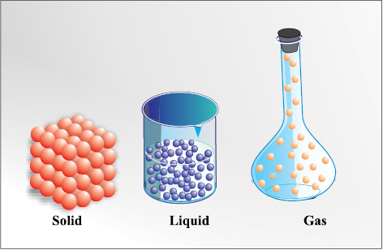
Fig. 1.1 Arrangement of particles in solid, liquid and gaseous state
You are also aware that matter can exist in three physical states viz. solid, liquid and gas. The constituent particles of matter in these three states can be represented as shown in Fig. 1.1. In solids, these particles are held very close to each other in an orderly fashion and there is not much freedom of movement. In liquids, the particles are close to each other but they can move around. However, in gases, the particles are far apart as compared to those present in solid or liquid states and their movement is easy and fast. Because of such arrangement of particles, different states of matter exhibit the following characteristics:
(i) Solids have definite volume and definite shape.
(ii) Liquids have definite volume but not the definite shape. They take the shape of the container in which they are placed.
(iii) Gases have neither definite volume nor definite shape. They completely occupy the container in which they are placed.
These three states of matter are interconvertible by changing the conditions of temperature and pressure.
Solid 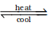 liquid Gas
On heating a solid usually changes to a liquid and the liquid on further heating changes to the gaseous ( or vapour) state. In the reverse process, a gas on cooling liquifies to the liquid and the liquid on further cooling freezes to the solid.
At the macroscopic or bulk level, matter can be classified asmixtures or pure substances. These can be further sub-divided as shown in Fig. 1.2.
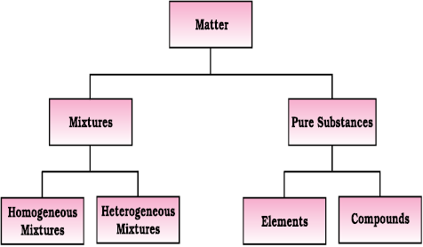
Fig. 1.2 Classification of matter
Many of the substances present around you are mixtures. For example, sugar solution in water, air, tea etc., are all mixtures. A mixture contains two or more substances present in it (in any ratio) which are called its components. A mixture may be homogeneous or heterogeneous. In a homogeneous mixture, the components completely mix with each other and its composition is uniform throughout. Sugar solution, and air are thus, the examples of homogeneous mixtures. In contrast to this, in heterogeneous mixtures, the composition is not uniform throughout and sometimes the different components can be observed. For example, the mixtures of salt and sugar, grains and pulses along with some dirt (often stone) pieces, are heterogeneous mixtures. You can think of many more examples of mixtures which you come across in the daily life. It is worthwhile to mention here that the components of a mixture can be separated by using physical methods such as simple hand picking, filtration, crystallisation, distillation etc.
Pure substances have characteristics different from the mixtures. They have fixed composition, whereas mixtures may contain the components in any ratio and their composition is variable. Copper, silver, gold, water, glucose are some examples of pure substances. Glucose contains carbon, hydrogen and oxygen in a fixed ratio and thus, like all other pure substances has a fixed composition. Also, the constituents of pure substances cannot be separated by simple physical methods.
Pure substances can be further classified into elements and compounds. An element consists of only one type of particles. These particles may be atoms or molecules. You may be familiar with atoms and molecules from the previous classes; however, you will be studying about them in detail in Unit 2. Sodium, copper, silver, hydrogen, oxygen etc. are some examples of elements. They all contain atoms of one type. However, the atoms of different elements are different in nature. Some elements such as sodium or copper, contain single atoms held together as their constituent particles whereas in some others, two or more atoms combine to give molecules of the element. Thus, hydrogen, nitrogen and oxygen gases consist of molecules in which two atoms combine to give their respective molecules. This is illustrated in Fig. 1.3.
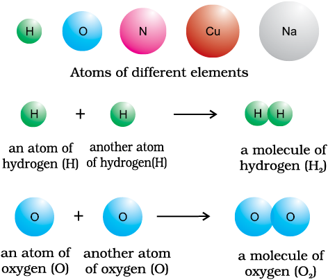
Fig. 1.3 A representation of atoms and molecules
When two or more atoms of different elements combine, the molecule of a compound is obtained. The examples of some compounds are water, ammonia, carbon dioxide, sugar etc. The molecules of water and carbon dioxide are represented in Fig 1.4.
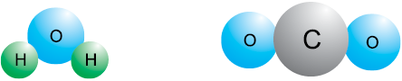
Fig. 1.4 A depiction of molecules of water and carbon dioxide
Water molecule (H2O)
Carbon dioxide molecule (CO2)
You have seen above that a water molecule comprises two hydrogen atoms and one oxygen atom. Similarly, a molecule of carbon dioxide contains two oxygen atoms combined with one carbon atom. Thus, the atoms of different elements are present in a compound in a fixed and definite ratio and this ratio is characteristic of a particular compound. Also, the properties of a compound are different from those of its constituent elements. For example, hydrogen and oxygen are gases whereas the compound formed by their combination i.e., water is a liquid. It is interesting to note that hydrogen burns with a pop sound and oxygen is a supporter of combustion, but water is used as a fire extinguisher.
Moreover, the constituents of a compound cannot be separated into simpler substances by physical methods. They can be separated by chemical methods.
1.3 Properties of Matter and their Measurement
Every substance has unique or characteristic properties. These properties can be classified into two categories – physical properties and chemical properties.
Physical properties are those properties which can be measured or observed without changing the identity or the composition of the substance. Some examples of physical properties are colour, odour, melting point, boiling point, density etc. The measurement or observation of chemical properties require a chemical change to occur. The examples of chemical properties are characteristic reactions of different substances; these include acidity or basicity, combustibility etc.
Many properties of matter such as length, area, volume, etc., are quantitative in nature. Any quantitative observation or measurement is represented by a number followed by units in which it is measured. For example length of a room can be represented as 6 m; here 6 is the number and m denotes metre – the unit in which the length is measured.
Two different systems of measurement, i.e. the English System and the Metric System were being used in different parts of the world. The metric system which originated in France in late eighteenth century, was more convenient as it was based on the decimal system. The need of a common standard system was being felt by the scientific community. Such a system was established in 1960 and is discussed below in detail.
1.3.1 The International System of Units (SI)
The International System of Units (in French Le Systeme International d’Unités – abbreviated as SI) was established by the 11th General Conference on Weights and Measures (CGPM from Conference Generale des Poids et Measures). The CGPM is an inter governmental treaty organization created by a diplomatic treaty known as Metre Convention which was signed in Paris in 1875.
The SI system has seven base units and they are listed in Table 1.1. These units pertain to the seven fundamental scientific quantities. The other physical quantities such as speed, volume, density etc. can be derived from these quantities.
The definitions of the SI base units are given in Table 1.2.
The SI system allows the use of prefixes to indicate the multiples or submultiples of a unit. These prefixes are listed in Table 1. 3.
Let us now quickly go through some of the quantities which you will be often using in this book.
Table 1.1 Base Physical Quantities and their Units
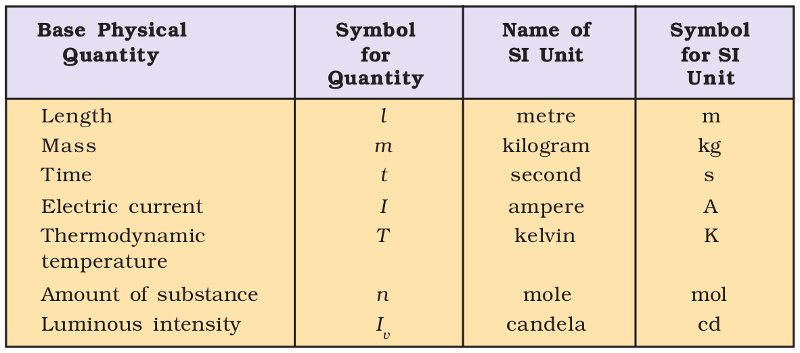
Table 1.2 Definitions of SI Base Units
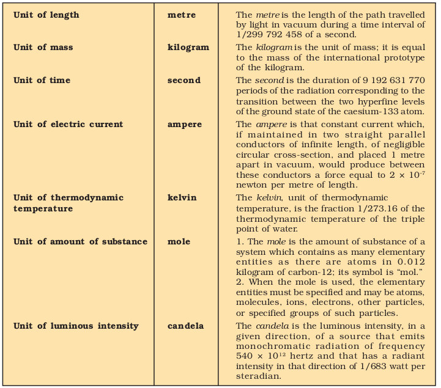
Table 1.3 Prefixes used in the SI System
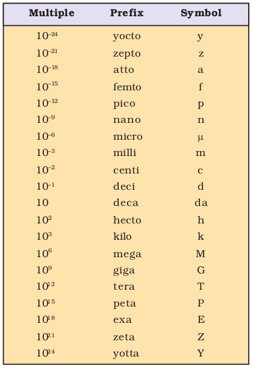
1.3.2 Mass and Weight
Mass of a substance is the amount of matter present in it while weight is the force exerted by gravity on an object. The mass of a substance is constant whereas its weight may vary from one place to another due to change in gravity. You should be careful in using these terms.
The mass of a substance can be determined very accurately in the laboratory by using an analytical balance (Fig. 1.5).
The SI unit of mass as given in Table 1.1 is kilogram. However, its fraction gram
(1 kg = 1000 g), is used in laboratories due to the smaller amounts of chemicals used in chemical reactions.
Volume
Volume has the units of (length)3. So in SI system, volume has units of m3.

Fig. 1.5 Analytical balance
But again, in chemistry laboratories, smaller volumes are used. Hence, volume is often denoted in cm3 or dm3 units.
Maintaining the National Standards of Measurement
The system of units including unit definitions keeps on changing with time. Whenever the accuracy of measurement of a particular unit was enhanced substantially by adopting new principles, member nations of metre treaty (signed in 1875), agreed to change the formal definition of that unit. Each modern industrialized country including India has a National Metrology Institute (NMI) which maintains standards of measurements. This responsibility has been given to the National Physical Laboratory (NPL),
New Delhi. This laboratory establishes experiments to realize the base units and derived units of measurement and maintains National Standards of Measurement. These standards are periodically inter-compared with standards maintained at other National Metrology Institutes in the world as well as those established at the International Bureau of Standards in Paris.

Fig. 1.6 Different units used to express volume
A common unit, litre (L) which is not an SI unit, is used for measurement of volume of liquids.
1 L = 1000 mL , 1000 cm3 = 1 dm3
Fig. 1.6 helps to visualise these relations.
In the laboratory, volume of liquids or solutions can be measured by graduated cylinder, burette, pipette etc. A volumetric flask is used to prepare a known volume of a solution. These measuring devices are shown in Fig. 1.7.
Fig 1.7 Some volume measuring devices
Density
Density of a substance is its amount of mass per unit volume. So SI units of density can be obtained as follows:
SI unit of density = 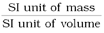
= 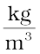 or kg m–3
This unit is quite large and a chemist often expresses density in g cm–3, where mass is expressed in gram and volume is expressed in cm3.
Temperature
There are three common scales to measure temperature — °C (degree celsius), °F (degree fahrenheit) and K (kelvin). Here, K is the SI unit. The thermometers based on these scales are shown in Fig. 1.8. Generally, the thermometer with celsius scale are calibrated from 0° to 100° where these two temperatures are the freezing point and the boiling point of water respectively. The fahrenheit scale is represented between 32° to 212°.

Fig. 1.8 Thermometers using different temperature scales
The temperatures on two scales are related to each other by the following relationship:
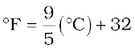
The kelvin scale is related to celsius scale as follows :
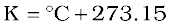
It is interesting to note that temperature below 0 °C (i.e. negative values) are possible in Celsius scale but in Kelvin scale, negative temperature is not possible.
Reference Standard
After defining a unit of measurement such as the kilogram or the metre, scientists agreed on reference standards that make it possible to calibrate all measuring devices. For getting reliable measurements, all devices such as metre sticks and analytical balances have been calibrated by their manufacturers to give correct readings. However, each of these devices is standardised or calibrated against some reference. The mass standard is the kilogram since 1889. It has been defined as the mass of platinum-iridium (Pt-Ir) cylinder that is stored in an airtight jar at International Bureau of Weights and Measures in Sevres, France. Pt-Ir was chosen for this standard because it is highly resistant to chemical attack and its mass will not change for an extremely long time.
Scientists are in search of a new standard for mass. This is being attempted through accurate determination of Avogadro constant. Work on this new standard focuses on ways to measure accurately the number of atoms in a well-defined mass of sample. One such method, which uses X-rays to determine the atomic density of a crystal of ultrapure silicon, has an accuracy of about 1 part in 106 but has not yet been adopted to serve as a standard. There are other methods but none of them are presently adequate to replace the Pt-Ir cylinder. No doubt, changes are expected within this decade.
The metre was originally defined as the length between two marks on a Pt-Ir bar kept at a temperature of 0°C (273.15 K). In 1960 the length of the metre was defined as 1.65076373 ×106 times the wavelength of light emitted by a krypton laser. Although this was a cumbersome number, it preserved the length of the metre at its agreed value. The metre was redefined in 1983 by CGPM as the length of path travelled by light in vacuum during a time interval of 1/299 792 458 of a second. Similar to the length and the mass, there are reference standards for other physical quantities.
1.4 Uncertainty in Measurement
Many a times in the study of chemistry, one has to deal with experimental data as well as theoretical calculations. There are meaningful ways to handle the numbers conveniently and present the data realistically with certainty to the extent possible. These ideas are discussed below in detail.
1.4.1 Scientific Notation
As chemistry is the study of atoms and molecules which have extremely low masses and are present in extremely large numbers, a chemist has to deal with numbers as large as 602, 200,000,000,000,000,000,000 for the molecules of 2 g of hydrogen gas or as small as 0.00000000000000000000000166 g mass of a H atom. Similarly other constants such as Planck’s constant, speed of light, charges on particles etc., involve numbers of the above magnitude.
It may look funny for a moment to write or count numbers involving so many zeros but it offers a real challenge to do simple mathematical operations of addition, subtraction, multiplication or division with such numbers. You can write any two numbers of the above type and try any one of the operations you like to accept the challenge and then you will really appreciate the difficulty in handling such numbers.
This problem is solved by using scientific notation for such numbers, i.e., exponential notation in which any number can be represented in the form N × 10n where n is an exponent having positive or negative values and N is a number (called digit term) which varies between 1.000... and 9.999....
Thus, we can write 232.508 as 2.32508 ×102 in scientific notation. Note that while writing it, the decimal had to be moved to the left by two places and same is the exponent (2) of 10 in the scientific notation.
Similarly, 0.00016 can be written as 1.6 × 10–4. Here the decimal has to be moved four places to the right and ( – 4) is the exponent in the scientific notation.
Now, for performing mathematical operations on numbers expressed in scientific notations, the following points are to be kept in mind.
Multiplication and Division
These two operations follow the same rules which are there for exponential numbers, i.e.
Addition and Subtraction
For these two operations, first the numbers are written in such a way that they have same exponent. After that, the coefficient are added or subtracted as the case may be.
Thus, for adding 6.65 × 104 and 8.95 × 103, 6.65 × 104 + 0.895 × 104 exponent is made same for both the numbers.
Then, these numbers can be added as follows (6.65 + 0.895) × 104 = 7.545 × 104
Similarly, the subtraction of two numbers can be done as shown below :
2.5 × 10–2 – 4.8 × 10–3
= (2.5 × 10–2) – (0.48 × 10–2)
= (2.5 – 0.48) × 10–2 = 2.02 × 10–2
1.4.2 Significant Figures
Every experimental measurement has some amount of uncertainty associated with it. However, one would always like the results to be precise and accurate. Precision and accuracy are often referred to while we talk about the measurement.
Precision refers to the closeness of various measurements for the same quantity. However, accuracy is the agreement of a particular value to the true value of the result. For example, if the true value for a result is 2.00 g and a student ‘A’ takes two measurements and reports the results as 1.95 g and 1.93 g. These values are precise as they are close to each other but are not accurate. Another student repeats the experiment and obtains 1.94 g and 2.05 g as the results for two measurements. These observations are neither precise nor accurate. When a third student repeats these measurements and reports 2.01g and 1.99g as the result. These values are both precise and accurate. This can be more clearly understood from the data given in Table 1.4
Table 1.4 Data to Illustrate Precision and Accuracy
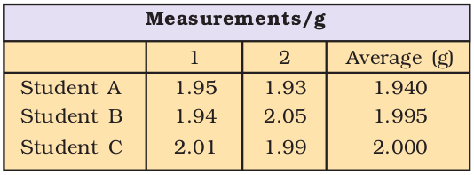
The uncertainty in the experimental or the calculated values is indicated by mentioning the number of significant figures. Significant figures are meaningful digits which are known with certainty. The uncertainty is indicated by writing the certain digits and the last uncertain digit. Thus, if we write a result as 11.2 mL, we say the 11 is certain and 2 is uncertain and the uncertainty would be ±1 in the last digit. Unless otherwise stated, an uncertainty of ±1 in the last digit is always understood.
There are certain rules for determining the number of significant figures. These are stated below:
(1) All non-zero digits are significant. For example in 285 cm, there are three significant figures and in 0.25 mL, there are two significant figures.
(2) Zeros preceding to first non-zero digit are not significant. Such zero indicates the position of decimal point.
Thus, 0.03 has one significant figure and 0.0052 has two significant figures.
(3) Zeros between two non-zero digits are significant. Thus, 2.005 has four significant figures.
(4) Zeros at the end or right of a number are significant provided they are on the right side of the decimal point. For example, 0.200 g has three significant figures.
But, if otherwise, the terminal zeros are not significant if there is no decimal point. For example, 100 has only one significant figure, but 100. has three significant figures and 100.0 has four significant figures. Such numbers are better represented in scientific notation. We can express the number 100 as 1×102 for one significant figure, 1.0×102 for two significant figures and 1.00×102 for three significant figures.
(5) Counting numbers of objects, for example, 2 balls or 20 eggs, have infinite significant figures as these are exact numbers and can be represented by writing infinite number of zeros after placing a decimal i.e., 2 = 2.000000 or 20 = 20.000000
In numbers written in scientific notation, all digits are significant e.g., 4.01×102 has three significant figures, and 8.256 × 10–3 has four significant figures.
Addition and Subtraction of Significant Figures
The result cannot have more digits to the right of the decimal point than either of the original numbers.
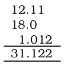
Here, 18.0 has only one digit after the decimal point and the result should be reported only up to one digit after the decimal point which
is 31.1.
Multiplication and Division of Significant Figures
In these operations, the result must be reported with no more significant figures as are there in the measurement with the few significant figures.
2.5 × 1.25 = 3.125
Since 2.5 has two significant figures, the result should not have more than two significant figures, thus, it is 3.1.
While limiting the result to the required number of significant figures as done in the above mathematical operation, one has to keep in mind the following points for rounding off the numbers
1. If the rightmost digit to be removed is more than 5, the preceding number is increased by one. for example, 1.386
If we have to remove 6, we have to round it to 1.39
2. If the rightmost digit to be removed is less than 5, the preceding number is not changed. For example, 4.334 if 4 is to be removed, then the result is rounded upto 4.33.
3. If the rightmost digit to be removed is 5, then the preceding number is not changed if it is an even number but it is increased by one if it is an odd number. For example, if 6.35 is to be rounded by removing 5, we have to increase 3 to 4 giving 6.4 as the result. However, if 6.25 is to be rounded off it is rounded off to 6.2.
1.4.3 Dimensional Analysis
Often while calculating, there is a need to convert units from one system to other. The method used to accomplish this is called factor label method or unit factor method or dimensional analysis. This is illustrated below.
Example
A piece of metal is 3 inch (represented by in) long. What is its length in cm?
We know that 1 in = 2.54 cm
From this equivalence, we can write

thus 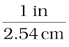 equals 1 and  also equals 1. Both of these are called unit factors. If some number is multiplied by these unit factors (i.e. 1), it will not be affected otherwise.
also equals 1. Both of these are called unit factors. If some number is multiplied by these unit factors (i.e. 1), it will not be affected otherwise.
Say, the 3 in given above is multiplied by the unit factor. So,
3 in = 3 in ×  = 3 × 2.54 cm = 7.62 cm
= 3 × 2.54 cm = 7.62 cm
Now the unit factor by which multiplication is to be done is that unit factor (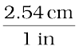 in the above case) which gives the desired units i.e., the numerator should have that part which is required in the desired result.
It should also be noted in the above example that units can be handled just like other numerical part. It can be cancelled, divided, multiplied, squared etc. Let us study one more example for it.
Example
A jug contains 2L of milk. Calculate the volume of the milk in m3.
Since 1 L = 1000 cm3
and 1m = 100 cm which gives 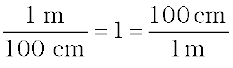
To get m3 from the above unit factors, the first unit factor is taken and it is cubed.
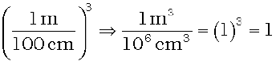
Now 2 L = 2×1000 cm3
The above is multiplied by the unit factor
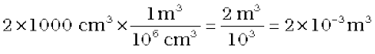
Example
How many seconds are there in 2 days?
Here, we know 1 day = 24 hours (h)
or 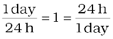
then 1h = 60 min
or 
so, for converting 2 days to seconds,
i.e., 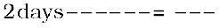 seconds
The unit factors can be multiplied in series in one step only as follows:
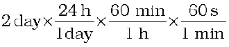
= 2 × 24 × 60 × 60 s
= 172800 s
1.5 Laws of Chemical Combinations
The combination of elements to form compounds is governed by the following five basic laws.
Antoine Lavoisier
(1743—1794)
1.5.1 Law of Conservation of Mass
It states that matter can neither be created nor destroyed.
This law was put forth by Antoine Lavoisier in 1789. He performed careful experimental studies for combustion reactions for reaching to the above conclusion. This law formed the basis for several later developments in chemistry. Infact, this was the result of exact measurement of masses of reactants and products, and carefully planned experiments performed by Lavoisier.
1.5.2 Law of Definite Proportions
This law was given by, a French chemist, Joseph Proust. He stated that a given compound always contains exactly the same proportion of elements by weight.
Joseph Proust
(1754—1826)
Proust worked with two samples of cupric carbonate — one of which was of natural origin and the other was synthetic one. He found that the composition of elements present in it was same for both the samples as shown below :
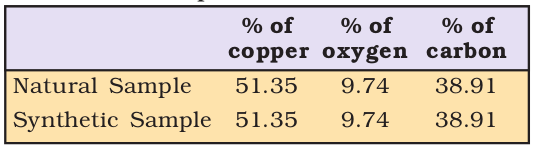
Thus, irrespective of the source, a given compound always contains same elements in the same proportion. The validity of this law has been confirmed by various experiments. It is sometimes also referred to as Law of definite composition.
1.5.3 Law of Multiple Proportions
This law was proposed by Dalton in 1803. According to this law, if two elements can combine to form more than one compound, the masses of one element that combine with a fixed mass of the other element, are in the ratio of small whole numbers.
For example, hydrogen combines with oxygen to form two compounds, namely, water and hydrogen peroxide.
Hydrogen + Oxygen → Water
2g 16g 18g
Hydrogen + Oxygen → Hydrogen Peroxide
2g 32g 34g
Here, the masses of oxygen (i.e. 16 g and 32 g) which combine with a fixed mass of hydrogen (2g) bear a simple ratio, i.e. 16:32 or 1: 2.
1.5.4 Gay Lussac’s Law of Gaseous Volumes
This law was given by Gay Lussac in 1808. He observed that when gases combine or are produced in a chemical reaction they do so in a simple ratio by volume provided all gases are at same temperature and pressure.
Joseph Louis Gay Lussac
Thus, 100 mL of hydrogen combine with 50 mL of oxygen to give 100 mL of water vapour.
Hydrogen + Oxygen → Water
100 mL 50 mL 100 mL
Thus, the volumes of hydrogen and oxygen which combine together (i.e. 100 mL and 50 mL) bear a simple ratio of 2:1.
Gay-Lussac’s discovery of integer ratio in volume relationship is actually the law of definite proportions by volume. The law of definite proportions, stated earlier, was with respect to mass. The Gay-Lussac’s law was explained properly by the work of Avogadro in 1811.
1.5.5 Avogadro Law
In 1811, Avogadro proposed that equal volumes of gases at the same temperature and pressure should contain equal number of molecules. Avogadro made a distinction between atoms and molecules which is quite understandable in the present times. If we consider again the reaction of hydrogen and oxygen to produce water, we see that two volumes of hydrogen combine with one volume of oxygen to give two volumes of water without leaving any unreacted oxygen.
Lorenzo Romano
Amedeo Carlo Avogadro di Quareqa edi Carreto (1776-1856)
Note that in the Fig. 1.9, each box contains equal number of molecules. In fact, Avogadro could explain the above result by considering the molecules to be polyatomic. If hydrogen and oxygen were considered as diatomic as recognised now, then the above results are easily understandable.
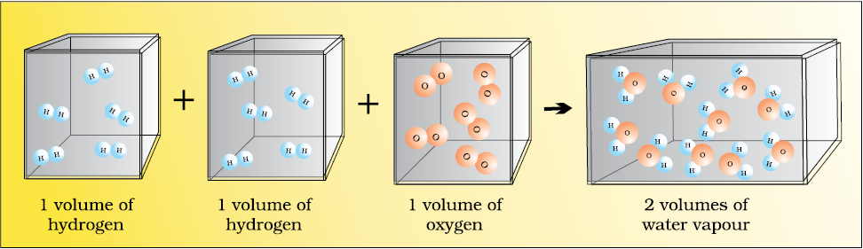
Fig. 1.9 Two volumes of hydrogen react with One volume of oxygen to give Two volumes of water vapour
However, Dalton and others believed at that time that atoms of the same kind cannot combine and molecules of oxygen or hydrogen containing two atoms did not exist. Avogadro’s proposal was published in the French Journal de Physidue. In spite of being correct, it did not gain much support.
After about 50 years, in 1860, first international conference on chemistry was held in Karlsruhe, Germany to resolve various ideas. At the meeting, Stanislao Cannizaro presented a sketch of a course of chemical philosophy which emphasised the importance of Avogadro’s work.
1.6 Dalton’s Atomic Theory
Although the origin of idea that matter is composed of small indivisible particles called ‘a-tomio’ (meaning — indivisible), dates back to the time of Democritus, a Greek Philosopher (460 — 370 BC), it again started emerging as a result of several experimental studies which led to the Laws mentioned above.
John Dalton
(1776—1884)
In 1808, Dalton published ‘A New System of Chemical Philosophy’ in which he proposed the following :
1. Matter consists of indivisible atoms.
2. All the atoms of a given element have identical properties including identical mass. Atoms of different elements differ in mass.
3. Compounds are formed when atoms of different elements combine in a fixed ratio.
4. Chemical reactions involve reorganisation of atoms. These are neither created nor destroyed in a chemical reaction.
Dalton’s theory could explain the laws of chemical combination.
1.7 Atomic and Molecular Masses
After having some idea about the terms atoms and molecules, it is appropriate here to understand what we mean by atomic and molecular masses.
1.7.1 Atomic Mass
The atomic mass or the mass of an atom is actually very-very small because atoms are extremely small. Today, we have sophisticated techniques e.g., mass spectrometry for determining the atomic masses fairly accurately. But, in the nineteenth century, scientists could determine mass of one atom relative to another by experimental means, as has been mentioned earlier. Hydrogen, being lightest atom was arbitrarily assigned a mass of 1 (without any units) and other elements were assigned masses relative to it. However, the present system of atomic masses is based on carbon - 12 as the standard and has been agreed upon in 1961. Here, Carbon - 12 is one of the isotopes of carbon and can be represented as 12C. In this system, 12C is assigned a mass of exactly 12 atomic mass unit (amu) and masses of all other atoms are given relative to this standard. One atomic mass unit is defined as a mass exactly equal to one-twelfth the mass of one carbon - 12 atom.
And 1 amu = 1.66056×10–24 g
Mass of an atom of hydrogen = 1.6736×10–24 g
Thus, in terms of amu, the mass
of hydrogen atom = 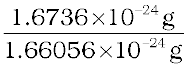
= 1.0078 amu
= 1.0080 amu
Similarly, the mass of oxygen - 16 (16O) atom would be 15.995 amu.
Today, ‘amu’ has been replaced by ‘u’ which is known as unified mass.
When we use atomic masses of elements in calculations, we actually use average atomic masses of elements which are explained below.
1.7.2 Average Atomic Mass
Many naturally occurring elements exist as more than one isotope. When we take into account the existence of these isotopes and their relative abundance (per cent occurrence), the average atomic mass of that element can be computed. For example, carbon has the following three isotopes with relative abundances and masses as shown against each of them.
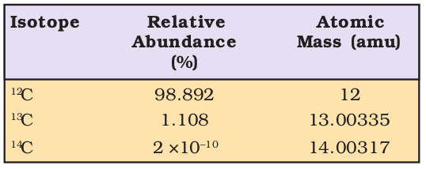
From the above data, the average atomic mass of carbon will come out to be :
(0.98892) (12 u) + ( 0.01108) (13.00335 u) + (2 × 10–12) (14.00317 u)
= 12.011 u
Similarly, average atomic masses for other elements can be calculated. In the periodic table of elements, the atomic masses mentioned for different elements actually represented their average atomic masses.
1.7.3 Molecular Mass
Molecular mass is the sum of atomic masses of the elements present in a molecule. It is obtained by multiplying the atomic mass of each element by the number of its atoms and adding them together. For example, molecular mass of methane which contains one carbon atom and four hydrogen atoms can be obtained as follows :
Molecular mass of methane,
(CH4) = (12.011 u) + 4 (1.008 u)
= 16.043 u
Similarly, molecular mass of water (H2O)
= 2 × atomic mass of hydrogen + 1 × atomic mass of oxygen
= 2 (1.008 u) + 16.00 u
= 18.02 u
Problem 1.1
Calculate molecular mass of glucose (C6H12O6) molecule.
Solution
Molecular mass of glucose (C6H12O6)
= 6(12.011 u) + 12(1.008 u) + 6(16.00 u)
= (72.066 u) + (12.096 u) + (96.00 u)
= 180.162 u
1.7.4 Formula Mass
Some substances such as sodium chloride do not contain discrete molecules as their constituent units. In such compounds, positive (sodium) and negative (chloride) entities are arranged in a three-dimensional structure, as shown in Fig. 1.10.
It may be noted that in sodium chloride, one Na+ is surrounded by six Cl– and vice-versa.

Fig. 1.10 Packing of Na+ and Cl– ions in sodium chloride
The formula such as NaCl is used to calculate the formula mass instead of molecular mass as in the solid state sodium chloride does not exist as a single entity.
Thus, formula mass of sodium chloride = atomic mass of sodium + atomic mass of chlorine
= 23.0 u + 35.5 u = 58.5 u
1.8 Mole concept and Molar Masses
Atoms and molecules are extremely small in size and their numbers in even a small amount of any substance is really very large. To handle such large numbers, a unit of similar magnitude is required.
Just as we denote one dozen for 12 items, score for 20 items, gross for 144 items, we use the idea of mole to count entities at the microscopic level (i.e. atoms/molecules/particles, electrons, ions, etc).
In SI system, mole (symbol, mol) was introduced as seventh base quantity for the amount of a substance.
One mole is the amount of a substance that contains as many particles or entities as there are atoms in exactly 12 g (or 0.012 kg) of the 12C isotope. It may be emphasised that the mole of a substance always contain the same number of entities, no matter what the substance may be. In order to determine this number precisely, the mass of a carbon–12 atom was determined by a mass spectrometer and found to be equal to 1.992648 × 10–23 g. Knowing that one mole of carbon weighs 12 g, the number of atoms in it is equal to :
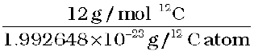
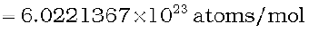
This number of entities in 1 mol is so important that it is given a separate name and symbol. It is known as ‘Avogadro constant’, denoted by NA in honour of Amedeo Avogadro. To really appreciate largeness of this number, let us write it with all the zeroes without using any powers of ten.
602213670000000000000000
Hence, so many entities (atoms, molecules or any other particle) constitute one mole of a particular substance.
We can, therefore, say that 1 mol of hydrogen atoms = 6.022×1023 atoms
1 mol of water molecules = 6.022×1023 water molecules
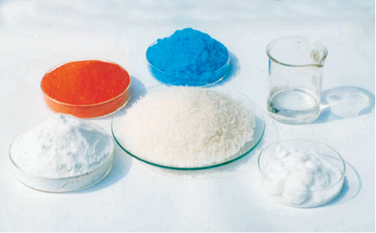
Fig. 1.11 One mole of various substances
1 mol of sodium chloride = 6.022 × 1023 formula units of sodium chloride
Having defined the mole, it is easier to know mass of one mole of the substance or the constituent entities. The mass of one mole of a substance in grams is called its
molar mass. The molar mass in grams is numerically equal to atomic/molecular/formula mass in u.
Molar mass of water = 18.02 g mol-1
Molar mass of sodium chloride = 58.5 g mol-1
1.9 Percentage Composition
So far, we were dealing with the number of entities present in a given sample. But many a time, the information regarding the percentage of a particular element present in a compound is required. Suppose an unknown or new compound is given to you, the first question you would ask is: what is its formula or what are its constituents and in what ratio are they present in the given compound? For known compounds also, such information provides a check whether the given sample contains the same percentage of elements as is present in a pure sample. In other words, one can check the purity of a given sample by analysing this data.
Let us understand it by taking the example of water (H2O). Since water contains hydrogen and oxygen, the percentage composition of both these elements can be calculated as follows :
Mass % of an element =
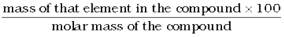
Molar mass of water = 18.02 g
Mass % of hydrogen = 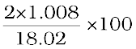
= 11.18
Mass % of oxygen = 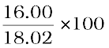
= 88.79
Let us take one more example. What is the percentage of carbon, hydrogen and oxygen in ethanol?
Molecular formula of ethanol is : C2H5OH Molar mass of ethanol is : (2×12.01 + 6×1.008 + 16.00) g
= 46.068 g
Mass per cent of carbon = 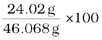 = 52.14%
Mass per cent of hydrogen = 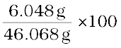 = 13.13%
Mass per cent of oxygen = 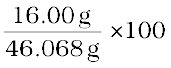 = 34.73%
After understanding the calculation of per cent of mass, let us now see what information can be obtained from the per cent composition data.
1.9.1 Empirical Formula for Molecular Formula
An empirical formula represents the simplest whole number ratio of various atoms present in a compound whereas the molecular formula shows the exact number of different types of atoms present in a molecule of a compound.
If the mass per cent of various elements present in a compound is known, its empirical formula can be determined. Molecular formula can further be obtained if the molar mass is known. The following example illustrates this sequence.
Problem 1.2
A compound contains 4.07 % hydrogen, 24.27 % carbon and 71.65 % chlorine. Its molar mass is 98.96 g. What are its empirical and molecular formulas ?
Solution
Step 1. Conversion of mass per cent to grams.
Since we are having mass per cent, it is convenient to use 100 g of the compound as the starting material. Thus, in the 100 g sample of the above compound, 4.07g hydrogen is present, 24.27g carbon is present and 71.65 g chlorine is present.
Step 2. Convert into number moles of each element
Divide the masses obtained above by respective atomic masses of various elements.
Moles of hydrogen = 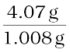 = 4.04
Moles of carbon = 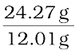 = 2.021
Moles of chlorine = 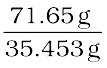 = 2.021
Step 3. Divide the mole value obtained above by the smallest number
Since 2.021 is smallest value, division by it gives a ratio of 2:1:1 for H:C:Cl .
In case the ratios are not whole numbers, then they may be converted into whole number by multiplying by the suitable coefficient.
Step 4. Write empirical formula by mentioning the numbers after writing the symbols of respective elements.
CH2Cl is, thus, the empirical formula of the above compound.
Step 5. Writing molecular formula
(a) Determine empirical formula mass
Add the atomic masses of various atoms present in the empirical formula.
For CH2Cl, empirical formula mass is
12.01 + 2 × 1.008 + 35.453
= 49.48 g
(b) Divide Molar mass by empirical formula mass
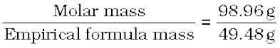
= 2 = (n)
(c) Multiply empirical formula by n obtained above to get the molecular formula
Empirical formula = CH2Cl, n = 2. Hence molecular formula is C2H4Cl2.
1.10 Stoichiometry and Stoichiometric Calculations
The word ‘stoichiometry’ is derived from two Greek words - stoicheion (meaning element) and metron (meaning measure). Stoichiometry, thus, deals with the calculation of masses (sometimes volumes also) of the reactants and the products involved in a chemical reaction. Before understanding how to calculate the amounts of reactants required or the products produced in a chemical reaction, let us study what information is available from the balanced chemical equation of a given reaction. Let us consider the combustion of methane. A balanced equation for this reaction is as given below :
CH4 (g) + 2O2 (g) → CO2 (g) + 2 H2O (g)
Here, methane and dioxygen are called reactants and carbon dioxide and water are called products.
Balancing a chemical equation
According to the law of conservation of mass, a balanced chemical equation has the same number of atoms of each element on both sides of the equation. Many chemical equations can be balanced by trial and error. Let us take the reactions of a few metals and non-metals with oxygen to give oxides
4 Fe(s) + 3O2(g) → 2Fe2O3(s) (a) balanced equation
2 Mg(s) + O2(g) → 2MgO(s) (b) balanced equation
P4(s) + O2 (g) → P4O10(s) (c) unbalanced equation
Equations (a) and (b) are balanced since there are same number of metal and oxygen atoms on each side of equations. However equation (c) is not balanced. In this equation, phosphorus atoms are balanced but not the oxygen atoms. To balance it, we must place the coefficient 5 on the left of oxygen on the left side of the equation to balance the oxygen atoms appearing on the right side of the equation.
P4(s) + 5O2(g) → P4O10(s) balanced equation
Now let us take combustion of propane, C3H8. This equation can be balanced in steps.
Step 1 Write down the correct formulas of reactants and products. Here propane and oxygen are reactants, and carbon dioxide and water are products.
C3H8(g) + O2(g) → CO2 (g) +H2O(l) unbalanced equation
Step 2 Balance the number of C atoms: Since 3 carbon atoms are in the reactant, therefore, three CO2 molecules are required on the right side.
C3H8 (g) + O2 (g) → 3CO2 (g) + H2O (l)
Step 3 Balance the number of H atoms : on the left there are 8 hydrogen atoms in the reactants however, each molecule of water has two hydrogen atoms, so four molecules of water will be required for eight hydrogen atoms on the right side.
C3H8 (g) +O2 (g) → 3CO2 (g)+4H2O (l)
Step 4 Balance the number of O atoms: There are ten oxygen atoms on the right side (3 × 2 = 6 in CO2 and 4 × 1= 4 in water). Therefore, five O2 molecules are needed to supply the required ten oxygen atoms.
C3H8 (g) +5O2 (g) → 3CO2 (g) + 4H2O (l)
Step 5 Verify that the number of atoms of each element is balanced in the final equation. The equation shows three carbon atoms, eight hydrogen atoms, and ten oxygen atoms on each side.
All equations that have correct formulas for all reactants and products can be balanced. Always remember that subscripts in formulas of reactants and products cannot be changed to balance an equation.
Note that all the reactants and the products are gases in the above reaction and this has been indicated by letter (g) in the brackets next to its formula. Similarly, in the case of solids and liquids, (s) and (l) are written respectively.
The coefficients 2 for O2 and H2O are called stoichiometric coefficients. Similarly the coefficient for CH4 and CO2 is one in each case. They represent the number of molecules (and moles as well) taking part in the reaction or formed in the reaction.
Thus, according to the above chemical reaction,
From these relationships, the given data can be interconverted as follows :
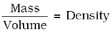
Problem 1.3
Calculate the amount of water (g) produced by the combustion of 16 g of methane.
Solution
The balanced equation for combustion of methane is :

(i) 16 g of CH4 corresponds to one mole.
(ii) From the above equation, 1 mol of CH4 (g) gives 2 mol of H2O (g).
2 mol of water (H2O) = 2 × (2+16) = 2 × 18 = 36 g
1 mol H2O = 18 g H2O 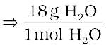 = 1
Hence 2 mol H2O × 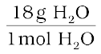
= 2 × 18 g H2O = 36 g H2O
Problem 1.4
How many moles of methane are required to produce 22 g CO2 (g) after combustion?
Solution
According to the chemical equation,
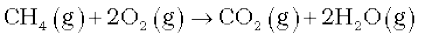
44g CO2 (g) is obtained from 16 g CH4 (g).
[ 1 mol CO2(g) is obtained from 1 mol of CH4(g)]
mole of CO2 (g)
= 22 g CO2 (g) ×
= 0.5 mol CO2 (g)
Hence, 0.5 mol CO2 (g) would be obtained from 0.5 mol CH4 (g) or 0.5 mol of CH4(g) would be required to produce 22 g CO2 (g).
1.10.1 Limiting Reagent
Many a time, the reactions are carried out when the reactants are not present in the amounts as required by a balanced chemical reaction. In such situations, one reactant is in excess over the other. The reactant which is present in the lesser amount gets consumed after sometime and after that no further reaction takes place whatever be the amount of the other reactant present. Hence, the reactant which gets consumed, limits the amount of product formed and is, therefore, called the limiting reagent.
In performing stoichiometric calculations, this aspect is also to be kept in mind.
Problem 1.5
50.0 kg of N2 (g) and 10.0 kg of H2 (g) are mixed to produce NH3 (g). Calculate the NH3 (g) formed. Identify the limiting reagent in the production of NH3 in this situation.
Solution
A balanced equation for the above reaction is written as follows :
Calculation of moles :
moles of N2
= 50.0 kg N2 ×
= 17.86×102 mol
moles of H2
= 10.00 kg H2 × = 4.96×103 mol
According to the above equation, 1 mol N2 (g) requires 3 mol H2 (g), for the reaction. Hence, for 17.86×102 mol of N2, the moles of H2 (g) required would be
17.86×102 mol N2 ×
= 5.36 ×103 mol H2
But we have only 4.96×103 mol H2. Hence, dihydrogen is the limiting reagent in this case. So NH3(g) would be formed only from that amount of available dihydrogen i.e.,4.96 × 103 mol
Since 3 mol H2(g) gives 2 mol NH3(g)
4.96×103 mol H2 (g) ×
= 3.30×103 mol NH3 (g)
3.30×103 mol NH3 (g) is obtained.
If they are to be converted to grams, it is done as follows :
1 mol NH3 (g) = 17.0 g NH3 (g)
3.30×103 mol NH3 (g) ×
= 3.30×103×17 g NH3 (g)
= 56.1×103 g NH3
= 56.1 kg NH3
1.10.2 Reactions in Solutions
A majority of reactions in the laboratories are carried out in solutions. Therefore, it is important to understand as how the amount of substance is expressed when it is present in the form of a solution. The concentration of a solution or the amount of substance present in its given volume can be expressed in any of the following ways.
1. Mass per cent or weight per cent (w/w %)
2. Mole fraction
3. Molarity
4. Molality
Let us now study each one of them in detail.
1. Mass per cent
It is obtained by using the following relation:
Problem 1.6
A solution is prepared by adding 2 g of a substance A to 18 g of water. Calculate the mass per cent of the solute.
Solution

= 10 %
2. Mole Fraction
It is the ratio of number of moles of a particular component to the total number of moles of the solution. If a substance ‘A’ dissolves in substance ‘B’ and their number of moles are nA and nB respectively; then the mole fractions of A and B are given as
3. Molarity
It is the most widely used unit and is denoted by M. It is defined as the number of moles of the solute in 1 litre of the solution. Thus,
Molarity (M)
Suppose we have 1 M solution of a substance, say NaOH and we want to prepare a 0.2 M solution from it.
1 M NaOH means 1 mol of NaOH present in 1 litre of the solution. For 0.2 M solution we require 0.2 moles of NaOH in 1 litre solution.
Hence, we have to take 0.2 moles of NaOH and make the solution to 1 litre.
Now how much volume of concentrated (1M) NaOH solution be taken which contains 0.2 moles of NaOH can be calculated as follows:
If 1 mol is present in 1 L or 1000 mL
then 0.2 mol is present in
= 200 mL
Thus, 200 mL of 1M NaOH are taken and enough water is added to dilute it to make it 1 litre.
In fact for such calculations, a general formula, M1 × V1 = M2 × V2 where M and V are molarity and volume respectively can be used. In this case, M1 is equal to 0.2; V1 = 1000 mL and, M2 = 1.0; V2 is to be calculated. Substituting the values in the formula:
0.2 M × 1000 mL = 1.0 M × V2
= 200 mL
Note that the number of moles of solute (NaOH) was 0.2 in 200 mL and it has remained the same, i.e., 0.2 even after dilution ( in 1000 mL) as we have changed just the amount of solvent (i.e. water) and have not done anything with respect to NaOH. But keep in mind the concentration.
Problem 1.7
Calculate the molarity of NaOH in the solution prepared by dissolving its 4 g in enough water to form 250 mL of the solution.
Solution
Since molarity (M)
= 0.4 mol L–1
= 0.4 M
Note that molarity of a solution depends upon temperature because volume of a solution is temperature dependent.
4. Molality
It is defined as the number of moles of solute present in 1 kg of solvent. It is denoted by m.
Thus, Molality (m)
Problem 1.8
The density of 3 M solution of NaCl is 1.25 g mL–1. Calculate molality of the solution.
Solution
M = 3 mol L–1
Mass of NaCl
in 1 L solution = 3 × 58.5 = 175.5 g
Mass of
1L solution = 1000 × 1.25 = 1250 g
(since density = 1.25 g mL–1)
Mass of
water in solution = 1250 –175.5 = 1074.5 g
Molality 
= 2.79 m
Often in a chemistry laboratory, a solution of a desired concentration is prepared by diluting a solution of known higher concentration. The solution of higher concentration is also known as stock solution. Note that molality of a solution does not change with temperature since mass remains unaffected with temperature.
SUMMARY
The study of chemistry is very important as its domain encompasses every sphere of life. Chemists study the properties and structure of substances and the changes undergone by them. All substances contain matter which can exist in three states – solid, liquid or gas. The constituent particles are held in different ways in these states of matter and they exhibit their characteristic properties. Matter can also be classified into elements, compounds or mixtures. An element contains particles of only one type which may be atoms or molecules. The compounds are formed where atoms of two or more elements combine in a fixed ratio to each other. Mixtures occur widely and many of the substances present around us are mixtures.
When the properties of a substance are studied, measurement is inherent. The quantification of properties requires a system of measurement and units in which the quantities are to be expressed. Many systems of measurement exist out of which the English and the Metric Systems are widely used. The scientific community, however, has agreed to have a uniform and common system throughout the world which is abbreviated as SI units (International System of Units).
Since measurements involve recording of data which are always associated with a certain amount of uncertainty, the proper handling of data obtained by measuring the quantities is very important. The measurements of quantities in chemistry are spread over a wide range of 10–31 to 10+23. Hence, a convenient system of expressing the numbers in scientific notation is used. The uncertainty is taken care of by specifying the number of significant figures in which the observations are reported. The dimensional analysis helps to express the measured quantities in different systems of units. Hence, it is possible to interconvert the results from one system of units to another.
The combination of different atoms is governed by basic laws of chemical combination – these being the Law of Conservation of Mass, Law of Definite Proportions, Law of Multiple Proportions, Gay Lussac’s Law of Gaseous Volumes and Avogadro Law. All these laws led to the Dalton’s atomic theory which states that atoms are building blocks of matter. The atomic mass of an element is expressed relative to 12C isotope of carbon which has an exact value of 12u. Usually, the atomic mass used for an element is the average atomic mass obtained by taking into account the natural abundance of different isotopes of that element. The molecular mass of a molecule is obtained by taking sum of the atomic masses of different atoms present in a molecule. The molecular formula can be calculated by determining the mass per cent of different elements present in a compound and its molecular mass.
The number of atoms, molecules or any other particles present in a given system are expressed in the terms of Avogadro constant (6.022 × 1023). This is known as 1 mol of the respective particles or entities.
Chemical reactions represent the chemical changes undergone by different elements and compounds. A balanced chemical equation provides a lot of information. The coefficients indicate the molar ratios and the respective number of particles taking part in a particular reaction. The quantitative study of the reactants required or the products formed is called stoichiometry. Using stoichiometric calculations, the amounts of one or more reactant(s) required to produce a particular amount of product can be determined and vice-versa. The amount of substance present in a given volume of a solution is expressed in number of ways, e.g., mass per cent, mole fraction, molarity and molality.
EXERCISES
1.1 Calculate the molar mass of the following :
(i) H2O (ii) CO2 (iii) CH4
1.2 Calculate the mass per cent of different elements present in sodium sulphate (Na2SO4).
1.3 Determine the empirical formula of an oxide of iron which has 69.9% iron and 30.1% dioxygen by mass.
1.4 Calculate the amount of carbon dioxide that could be produced when
(i) 1 mole of carbon is burnt in air.
(ii) 1 mole of carbon is burnt in 16 g of dioxygen.
(iii) 2 moles of carbon are burnt in 16 g of dioxygen.
1.5 Calculate the mass of sodium acetate (CH3COONa) required to make 500 mL of 0.375 molar aqueous solution. Molar mass of sodium acetate is 82.0245 g mol–1.
1.6 Calculate the concentration of nitric acid in moles per litre in a sample which has a density, 1.41 g mL–1 and the mass per cent of nitric acid in it being 69%.
1.7 How much copper can be obtained from 100 g of copper sulphate (CuSO4) ?
1.8 Determine the molecular formula of an oxide of iron in which the mass per cent of iron and oxygen are 69.9 and 30.1 respectively.
1.9 Calculate the atomic mass (average) of chlorine using the following data :

1.10 In three moles of ethane (C2H6), calculate the following :
(i) Number of moles of carbon atoms.
(ii) Number of moles of hydrogen atoms.
(iii) Number of molecules of ethane.
1.11 What is the concentration of sugar (C12H22O11) in mol L–1 if its 20 g are dissolved in enough water to make a final volume up to 2L?
1.12 If the density of methanol is 0.793 kg L–1, what is its volume needed for making 2.5 L of its 0.25 M solution?
1.13 Pressure is determined as force per unit area of the surface. The SI unit of pressure, pascal is as shown below :
1Pa = 1N m–2
If mass of air at sea level is 1034 g cm–2, calculate the pressure in pascal.
1.14 What is the SI unit of mass? How is it defined?
1.15 Match the following prefixes with their multiples:
| Prefixes | Multiples | |
| (i) | micro | 106 |
| (ii) | deca | 109 |
| (iii) | mega | 10–6 |
| (iv) | giga | 10–15 |
| (v) | femto | 10 |
1.16 What do you mean by significant figures ?
1.17 A sample of drinking water was found to be severely contaminated with chloroform, CHCl3, supposed to be carcinogenic in nature. The level of contamination was 15 ppm (by mass).
(i) Express this in percent by mass.
(ii) Determine the molality of chloroform in the water sample.
1.18 Express the following in the scientific notation:
(i) 0.0048
(ii) 234,000
(iii) 8008
(iv) 500.0
(v) 6.0012
1.19 How many significant figures are present in the following?
(i) 0.0025
(ii) 208
(iii) 5005
(iv) 126,000
(v) 500.0
(vi) 2.0034
1.20 Round up the following upto three significant figures:
(i) 34.216
(ii) 10.4107
(iii) 0.04597
(iv) 2808
1.21 The following data are obtained when dinitrogen and dioxygen react together to form different compounds :
| Mass of dinitrogen |
Mass of dioxygen |
|
| (i) | 14 g |
16 g |
| (ii) | 14 g |
32 g |
| (iii) | 28 g |
32 g |
| (iv) | 28 g |
80 g |
(a) Which law of chemical combination is obeyed by the above experimental data? Give its statement.
(b) Fill in the blanks in the following conversions:
(i) 1 km = ...................... mm = ...................... pm
(ii) 1 mg = ...................... kg = ...................... ng
(iii) 1 mL = ...................... L = ...................... dm3
1.22 If the speed of light is 3.0 × 108 m s–1, calculate the distance covered by light in 2.00 ns.
1.23 In a reaction
A + B2 AB2
Identify the limiting reagent, if any, in the following reaction mixtures.
(i) 300 atoms of A + 200 molecules of B
(ii) 2 mol A + 3 mol B
(iii) 100 atoms of A + 100 molecules of B
(iv) 5 mol A + 2.5 mol B
(v) 2.5 mol A + 5 mol B
1.24 Dinitrogen and dihydrogen react with each other to produce ammonia according to the following chemical equation:
N2 (g) + H2 (g)  2NH3 (g)
2NH3 (g)
(i) Calculate the mass of ammonia produced if 2.00 × 103 g dinitrogen reacts with 1.00 ×103 g of dihydrogen.
(ii) Will any of the two reactants remain unreacted?
(iii) If yes, which one and what would be its mass?
1.25 How are 0.50 mol Na2CO3 and 0.50 M Na2CO3 different?
1.26 If ten volumes of dihydrogen gas reacts with five volumes of dioxygen gas, how many volumes of water vapour would be produced?
1.27 Convert the following into basic units:
(i) 28.7 pm
(ii) 15.15 pm
(iii) 25365 mg
1.28 Which one of the following will have largest number of atoms?
(i) 1 g Au (s)
(ii) 1 g Na (s)
(iii) 1 g Li (s)
(iv) 1 g of Cl2(g)
1.29 Calculate the molarity of a solution of ethanol in water in which the mole fraction of ethanol is 0.040 (assume the density of water to be one).
1.30 What will be the mass of one 12C atom in g ?
1.31 How many significant figures should be present in the answer of the following calculations?
(i) (ii) 5 × 5.364
(iii) 0.0125 + 0.7864 + 0.0215
1.32 Use the data given in the following table to calculate the molar mass of naturally occuring argon isotopes:
1.33 Calculate the number of atoms in each of the following (i) 52 moles of Ar (ii) 52 u of He (iii) 52 g of He.
1.34 A welding fuel gas contains carbon and hydrogen only. Burning a small sample of it in oxygen gives 3.38 g carbon dioxide , 0.690 g of water and no other products. A volume of 10.0 L (measured at STP) of this welding gas is found to weigh 11.6 g. Calculate (i) empirical formula, (ii) molar mass of the gas, and (iii) molecular formula.
1.35 Calcium carbonate reacts with aqueous HCl to give CaCl2 and CO2 according to the reaction, CaCO3 (s) + 2 HCl (aq) → CaCl2 (aq) + CO2(g) + H2O(l)
What mass of CaCO3 is required to react completely with 25 mL of 0.75 M HCl?
1.36 Chlorine is prepared in the laboratory by treating manganese dioxide (MnO2) with aqueous hydrochloric acid according to the reaction
4 HCl (aq) + MnO2(s) → 2H2O (l) + MnCl2(aq) + Cl2 (g)
How many grams of HCl react with 5.0 g of manganese dioxide?